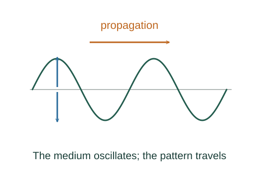

Derive travelling-wave phase, speed and energy flow
A point of unchanged phase satisfies kx − ωt = constant. Differentiating gives its propagation speed; phase repeats every 2π.
What the symbols mean
A: transverse amplitude; μ: string linear density; k = 2π/λ; ω = 2πf; 𝒯: string tension.
When this applies
Small-amplitude sinusoidal wave on a uniform ideal string. Interference formulas assume linear superposition.
Developing the argument

Track a fixed phase
A point of unchanged phase satisfies kx − ωt = constant. Differentiating gives its propagation speed; phase repeats every 2π.
Differentiate displacement
For y = A sin(kx − ωt), local transverse velocity is −Aω cos(kx − ωt) and local slope is Ak cos(kx − ωt).
Compute string power crossing a section
Tension transfers energy at rate −𝒯(∂y/∂x)(∂y/∂t). Use 𝒯 = μv², k = ω/v and average cos² = ½.
Superpose two waves algebraically
The trigonometric identity sin u + sin v = 2sin[(u+v)/2]cos[(u−v)/2] yields both phase interference and counterpropagating standing patterns.
A worked example
Doubling sinusoidal amplitude multiplies average transported power by four at unchanged frequency and medium.
Derivation behind this calculation ↗A point to keep straight
Propagation velocity differs from the local transverse velocity of a string element.
Check the assumptions and derivation ↗